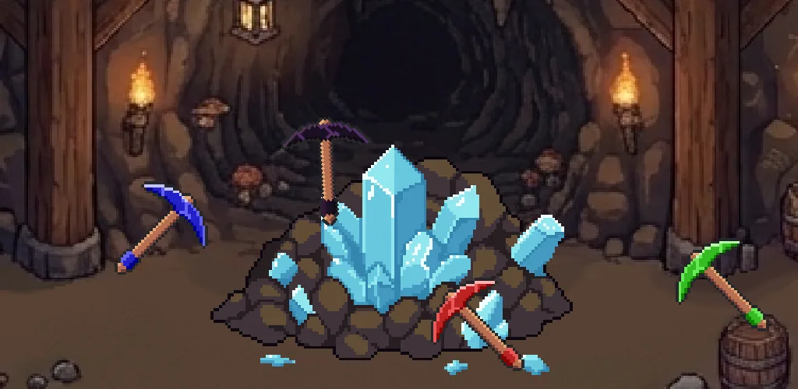
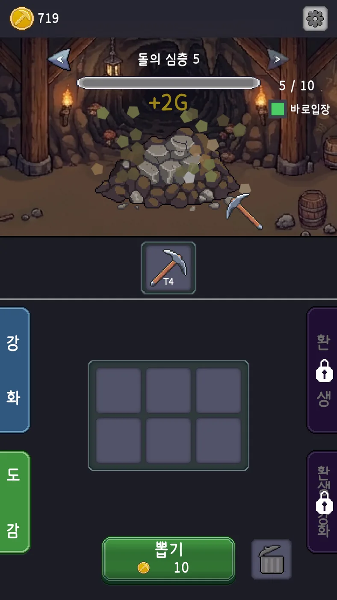
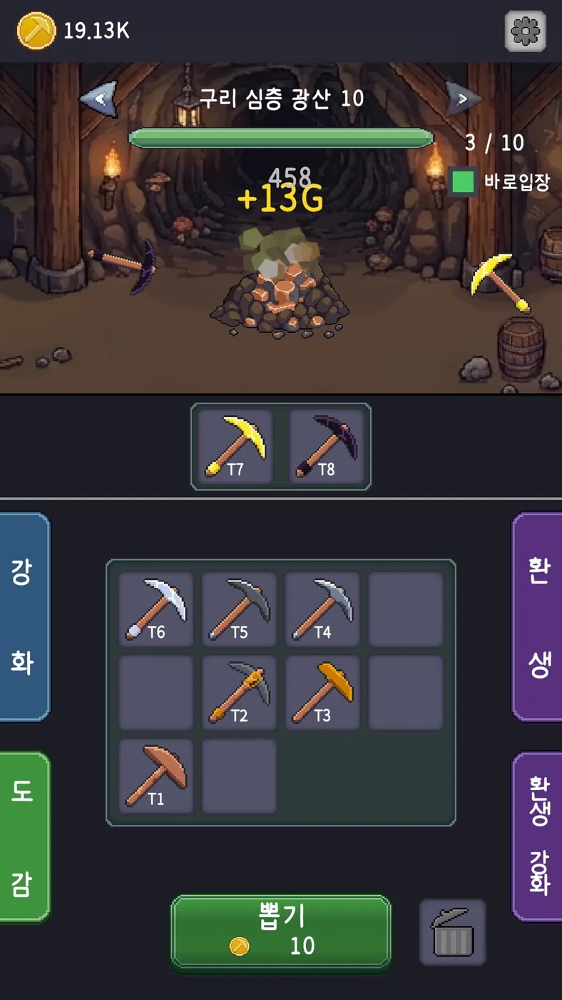
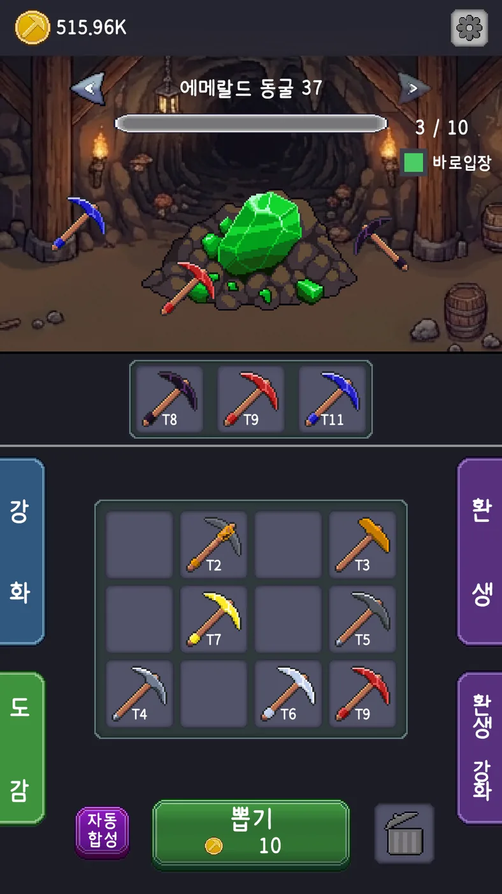

포트폴리오로
개인 프로젝트 · 2026.02 – 출시·운영
머지 광산
방치형 + 머지 + 클리커 · Android · 1인 개발 · Google Play
곡괭이를 합쳐 광산에 장착하면 자동으로 채굴하는 방치형 게임을 혼자 만들어 출시했습니다. 출시 뒤 운영에 필요한 원격 수치 조정과 지표 수집을 직접 붙였습니다.




이 페이지의 사례 원격 수치환생 안내와 지표
사례 1
앱 업데이트 없이 수치를 바꾸는 구조
CSV 11종
스토어 심사 없이 원격으로 바꿀 수 있게 만든 수치 데이터
- 상황
방치형은 출시 뒤에도 수치를 자주 고치게 됩니다. 수치를 바꿀 때마다 앱을 다시 빌드하면 스토어 심사를 거쳐야 합니다.
- 제약
-
- Remote Config의 값은 문자열(JSON 포함)뿐이라 CSV 파일을 그대로 올릴 수 없습니다.
- 원격 문서를 실행할 때마다 읽으면 그만큼 조회 비용이 듭니다.
- 원격 조회가 실패해도 게임은 켜져야 합니다.
- 검토한 방법
수치를 Remote Config 값에 직접 넣는 방법은 파일을 둘 수 없어 접었습니다.
- 선택과 이유
-
- Remote Config에는 수치 버전만 두고, CSV 본문은 Firestore에 둡니다.
- 기기에 저장한 캐시가 최신 버전이면 Firestore를 읽지 않습니다.
- 원격 조회에 실패하면 앱에 넣어 둔 CSV로 돌아갑니다.
- 문서와 캐시를 앱 버전별로 나눠, 버전끼리 데이터가 섞이지 않게 했습니다.
업로드는 스크립트와 운영 가이드로 정리해, 수치를 바꾸는 절차를 매번 기억하지 않아도 되게 했습니다.
- 결과
실행할 때 버전을 한 번 확인하고, 바뀐 경우에만 본문을 내려받습니다. 원격이 실패해도 게임은 내장 데이터로 켜집니다.
- 한계
구조는 갖췄지만, 출시 뒤 실제로 원격으로 수치를 바꾼 기록은 아직 없습니다.
코드: unity-portfolio / RemoteSpecSystem
사례 2
환생을 안내하고, 지표로 확인하기
79%
게임을 시작한 플레이어 중 첫 환생까지 도달한 비율 (130명 중 103명)
- 상황
지인이 플레이하는 모습을 보다가, 환생 조건을 채우고도 환생하지 않는 것을 발견했습니다. 환생을 안내하는 장치가 없어서라고 판단했습니다.
- 전제
튜토리얼 없이도 이해되는 설계가 목표였습니다. 그래서 안내는 힌트로만 주기로 했습니다.
- 검토한 방법
-
- 자동 환생: 환생 시점에 따라 재화를 주는 구조라, 기능을 열어 주는 게 아니라 환생을 시키는 것이 되어 접었습니다.
- 환생 버튼의 UI 변경: 같은 구성인 업그레이드·도감 화면도 함께 바꿔야 해서 보류했습니다.
- 선택과 이유
기존 화면 구성을 유지하고, 환생 버튼·환생 강화 버튼·장착 세 곳에 하이라이트 힌트를 띄웠습니다.
- 확인 방법
-
지인 몇 명의 반응만으로는 실제 플레이어가 어디서 멈추는지 알 수 없어, 이탈 구간을 단계별로 보려고 Firebase Analytics를 붙였습니다.
- 첫 경험 이벤트 4종: 첫 세션·첫 장착·첫 강화·첫 환생
- 환생 시점의 진행 상태, User Property 6종
가장 먼저 볼 값을 첫 환생 도달률로 정했습니다. 첫 환생이 이 게임의 핵심 루프가 한 바퀴 끝나는 지점이기 때문입니다.
- 결과
게임을 시작한 플레이어의 79%(130명 중 103명)가 첫 환생까지 도달해, 핵심 루프가 끝까지 이어지고 있었습니다.
- 한계
지표를 붙이기 전 자료가 없어서, 이 수치를 힌트의 효과로 단정하지는 않습니다.